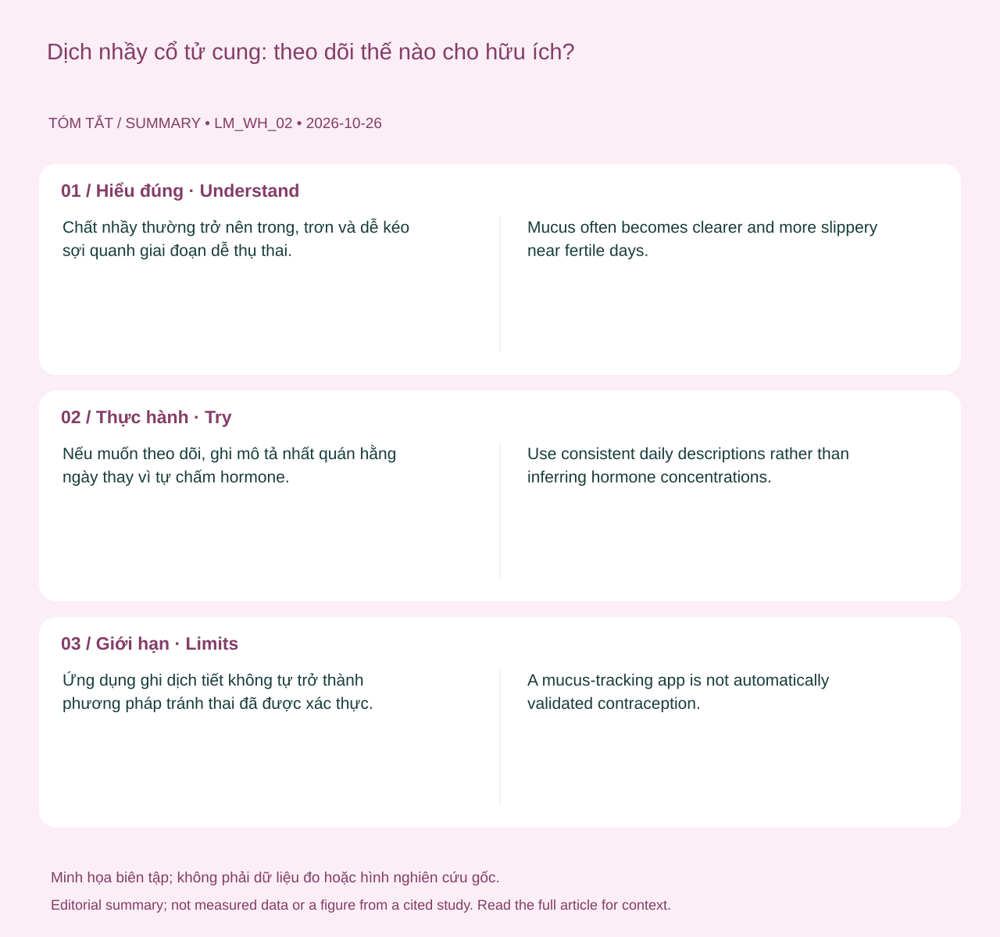

Hiểu đúng
Chất nhầy thường trở nên trong, trơn và dễ kéo sợi quanh giai đoạn dễ thụ thai. Tuy nhiên tinh dịch, chất bôi trơn, thuốc và nhiễm trùng có thể làm khó nhận biết. Một lần quan sát không xác nhận ngày rụng trứng. 1 2

Bạn có thể làm gì?
Nếu muốn theo dõi, ghi mô tả nhất quán hằng ngày thay vì tự chấm hormone. Khi mong có thai, có thể kết hợp với tư vấn và các dấu hiệu khác; nếu muốn tránh thai, cần học phương pháp cụ thể và hiểu hiệu quả thực tế.
Giới hạn cần biết
Ứng dụng ghi dịch tiết không tự trở thành phương pháp tránh thai đã được xác thực. Màu hoặc độ đặc riêng lẻ cũng không đủ chẩn đoán nhiễm trùng.
Khi nào cần tư vấn?
Dịch đổi mùi rõ, ngứa, đau, chảy máu hoặc đau vùng chậu cần khám thay vì tự dùng thuốc theo bảng màu.
Nguồn và phạm vi hỗ trợ
-
ACOG — Fertility Awareness-Based Methods of Family Planning — Professional patient guidance. Hỗ trợ: Chất nhầy, BBT, thời điểm sinh sản và giới hạn tránh thai.
-
ACOG — Vulvovaginal Health — Professional patient guidance. Hỗ trợ: Vệ sinh vùng kín, dịch tiết, thay đổi niêm mạc và điều trị.
Cập nhật nội dung và nguồn: 2026-10-26. Nội dung giáo dục; chưa có xác nhận duyệt bởi bác sĩ.